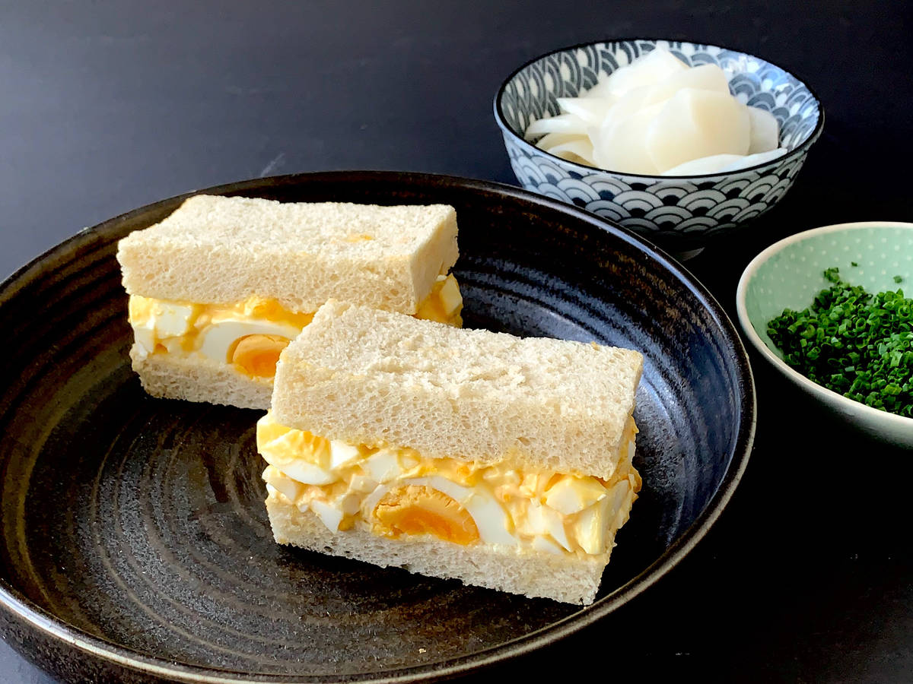

Tamago Sando

Description
A quick yummy dish
Ingredients
- 4 boiled eggs
- Kewpie mayonnaise
- White sandwich bread
Steps
- Make boiled eggs.
- Mash eggs with a fork. Roughly if you like chunks, finely if you want a smooth paste.
- Add Kewpie mayonnaise until it is a consistency that you prefer.
- Spread the mix between two slices of bread.
- Eat!